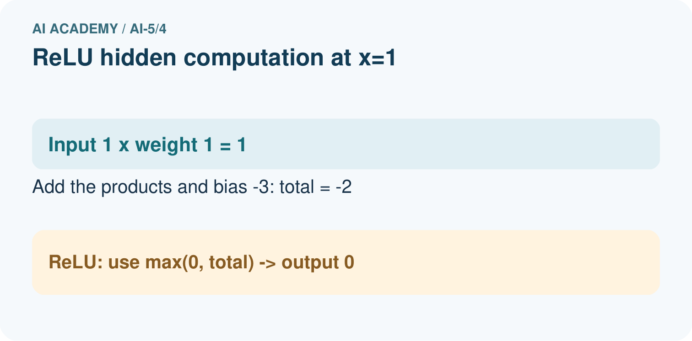
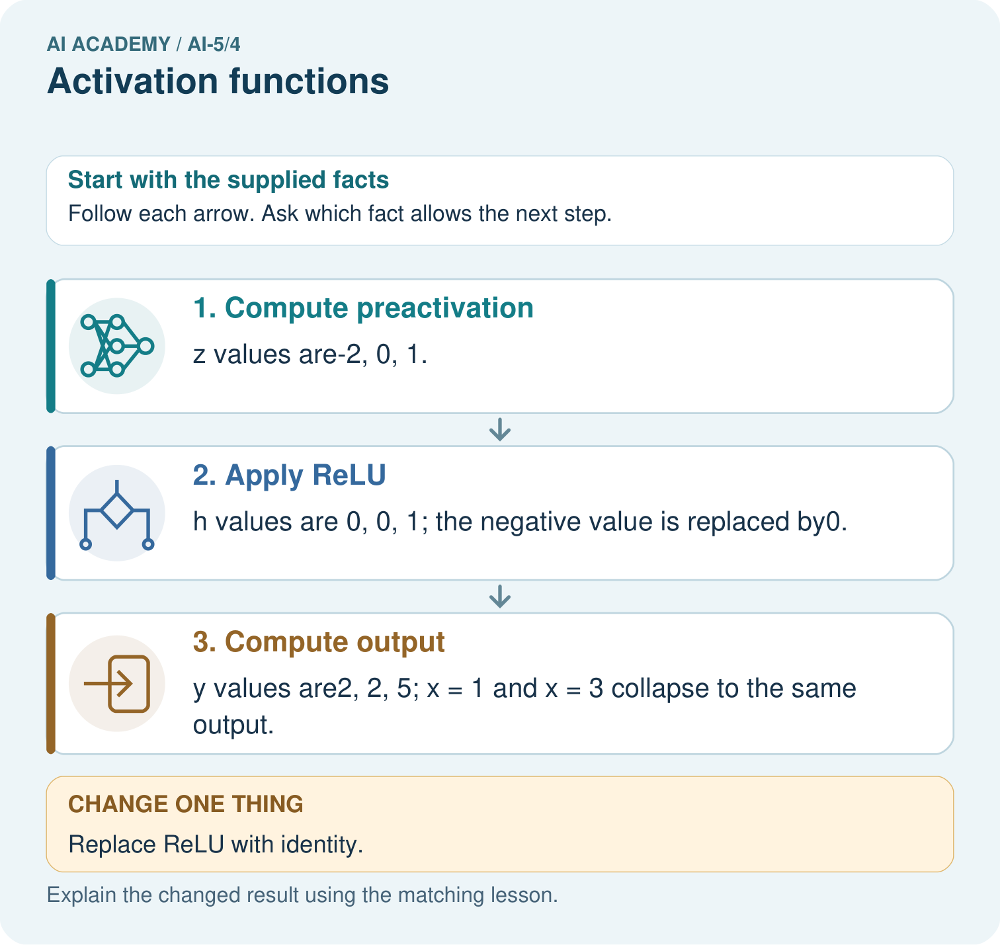

AI Academy · Level 5 · Grade 10 · Week 4 · Teacher guide
Activation functions
Learn to understand, design, build, test and explain AI systems responsibly.
Project: Image-pattern Network Investigation
Teacher guide · 1 of 7
Prepare the purpose, prerequisites and materials
Teach the learning cycle
Primary target: Trace identity ReLU and sigmoid on a numerical score
| Session | Sequence and minutes | Resources |
|---|---|---|
| Session 1 · Understand · 45 min | 0–7: recall and prerequisite; 7–15: inspect the concrete case and predict; 15–30: teacher models the worked trace; 30–40: learners explain a step using the text and visual; 40–45: check the core idea. | Sections 1–6; record the brief recall in the workbook. |
| Session 2 · Practise · 45 min | 0–5: retrieve the procedure; 5–15: W2 completion practice; 15–23: explain and check with a partner; 23–30: each learner answers the misconception check; 30–40: targeted reteaching or a harder variation; 40–45: prepare the investigation. | Sections 7–10; use the matching workbook W2 and misconception check. |
| Session 3 · Investigate and transfer · 45 min | 0–5: retrieve the decision rule; 5–20: investigate or trace; 20–30: start the independent case; 30–38: connect the project; 38–43: act on feedback; 43–45: plan the return check. | Sections 9 and 11–14. Give extra time to finish the full task set; use Section 15 when the week includes a coding lab. |
This is a starting allocation of 135 minutes, not a validated duration. Preserve all named topics. Schedule extra time for connected examples, the full investigation, independent cases and project building. Repeated copies of a case share one recorded attempt; they are not new evidence.
Retrieval answer guidance
Bias terms and decision boundaries
Without opening the old lesson, explain one key idea from Bias terms and decision boundaries. Give an example and a mistake that the idea helps you avoid.
Look for: Calculate a weighted score with a bias term
Reference example, not the only acceptable wording: Teacher explanation: Weighted sum 10 - 4 = 6; bias -3; score 3; prediction 1. Add the bias once after summing.
Representing inputs as vectors
Without opening the old lesson, explain one key idea from Representing inputs as vectors. Give an example and a mistake that the idea helps you avoid.
Look for: Encode a record using a fixed feature order and units
Reference example, not the only acceptable wording: Teacher explanation: A [4, 2], B [2, 4], C [3, 3]. Each has dimension 2. The table has 3 rows and 2 columns.
Use two 45-minute sessions to compare activation functions before network training. Students should trace z, activation a and any later output separately. Sigmoid arithmetic may use the supplied approximations. Focus on the change in function shape and the distinction between an activation, class decision and probability claim.
Outcomes
Trace identity ReLU and sigmoid on a numerical score
Explain how a nonlinear activation changes a computation
Distinguish an activation output from a final class or verified probability
Preparation
Printed lesson and workbook; paper and pencil
Calculator and optional local Python 3 editor; no packages or AI accounts needed
Use the fictional examples supplied; prepare the fresh retry before class
Prerequisite answer
The score is zero and the class is 1 because equality is included.
End goal for the pictorial case
By the end, I can explain activation functions using a traced example and a stated limitation.
This added worked case illustrates the week’s main idea. Retain all original and connected topics; schedule its practice within the teaching cycle.
Teacher guide · 2 of 7
Explain and model the mechanism
First compute an affine score z = w dot x + b. An activation then returns a = f(z). In a network this value may become an input to another layer; it is not automatically a class prediction. We will compare three functions using the same incoming scores so that only the activation changes.
Identity returns z unchanged. ReLU, pronounced ree-loo, returns the larger of zero and z. Thus ReLU(-2) = 0, ReLU(0) = 0 and ReLU(2) = 2. Positive scores keep their magnitude; ReLU does not turn every positive value into 1.
These are fixed arithmetic functions. Selecting a function or changing its input is not itself a training procedure. Later weeks will introduce losses and parameter updates.
Sigmoid is 1 / (1 + exp(-z)). Here exp(t) means e raised to power t, where e is approximately 2.718. A calculator or the supplied Python code can evaluate it; no calculus is required this week. For z = -2, 0 and 2, sigmoid outputs are approximately 0.1192, 0.5 and 0.8808.
For every finite mathematical input, sigmoid is strictly between 0 and 1, though computer rounding can produce an endpoint for extreme scores. Negative inputs produce values below 0.5, zero gives 0.5, and positive inputs give values above 0.5. A class rule still needs to be stated: if class 1 means sigmoid(z) >= 0.5, these three predictions are 0, 1 and 1.
The two algebraically equivalent branches avoid taking exp of a large positive number. A value within [0, 1] is not automatically a reliable probability: its interpretation depends on the fitted task and evaluation evidence.
| Term | Meaning |
|---|---|
| Activation function | A function applied to a computed score |
| ReLU | The function max(0, z), retaining positive scores and replacing negative scores with zero |
| Sigmoid | The function 1 / (1 + exp(-z)), mapping finite real scores into the interval between 0 and 1 |
| Nonlinear function | A function that cannot be represented by one fixed slope and offset over its entire domain |
Three functions receive the same score
Guided: identity outputs -1 and 1; ReLU outputs 0 and 1. Sigmoid class predictions under >= 0.5 are 0 and 1. Exit: the computation establishes an activation of about 0.8808 for score 2. It does not establish calibrated probabilities, correctness on this individual case or reliability on future populations.
Model the reasoning aloud
Use the complete worked example below before asking learners to complete W2. Reveal a small part, invite a prediction, then explain the deciding step. These teacher notes contain solutions; do not reveal the independent case answer during modelling.
Three functions receive the same score
| Thinking move | Teacher prompt |
|---|---|
| Plan | What is given? What is the question? Which procedure fits these facts? |
| Do | Point to each input and intermediate step in the worked trace. Name the rule that allows the next step. |
| Check | Does the output answer the question? Which assumption or limitation prevents a larger claim? |
Use the diagram and verbal explanation together. Ask learners to match a sentence to a specific visual step; do not assign learners fixed visual or auditory learning styles.
A pictorial worked case: Activation functions
See what ReLU removes before the next weighted step.
The facts we will use
Toy network z=x-3; h=max(0, z); y=3h+2. Inputs x=1, 3, 4.
All inputs and outcomes in this worked example are invented classroom data; no real model run is claimed.


Read the picture one step at a time
Why this result follows
ReLU means keep a positive value and replace a negative one with zero. The output layer receives that transformed value, not the original input. Inputs one and three therefore both deliver zero to the final layer and produce two. Replacing ReLU with identity changes the procedure: negative intermediate values now remain available to the next layer.
What this example does not establish
ReLU is one activation choice. Clipping negatives does not itself train the network or prove useful representation.
Change one thing in the pictured case
Change: Replace ReLU with identity.
Prediction: h becomes-2, 0, 1 and outputs become-4, 2, 5.
Reason: Identity retains the negative intermediate value instead of clipping it.
Ask while showing the picture
Cover the result. Ask learners to name the inputs and predict the next step. Uncover one step, connect the icon to the actual procedure, and explain its evidence. Then change the supplied condition and compare. The picture is a representation; it does not document execution of a real AI model.
Teacher guide · 3 of 7
Demonstrate and guide practice
| Time or stage | Teacher action |
|---|---|
| Session 1 start to 7 minutes | Retrieve the prerequisite boundary example. Introduce z as the score and a as the transformed value. |
| 7 to 18 minutes | Trace identity and ReLU for -2, 0 and 2. Complete W1, checking that positive values keep magnitude. |
| 18 to 32 minutes | Introduce the sigmoid formula and supplied values. Trace or run the stable code; complete W2 using the explicit equality policy. |
| 32 to 45 minutes | Compare the visual rows and complete the guided -1 and 1 case. Keep activation values separate from classes. |
| Session 2 start to 8 minutes | Retrieve ReLU at one negative and one positive input. Ask whether one line covers both sides. |
| 8 to 20 minutes | Complete W3 and trace the two worked chains at x = -1 and x = 1. Show the identity-chain simplification by substitution. |
| 20 to 35 minutes | Collect W4 independently, requiring a three-stage table. Do not award full credit for final y values without the intermediate trace. |
| 35 to 45 minutes | Complete W5 and the exit response. Use the fresh retry after feedback; connect to composing layers next week. |
Use the worked example in Sections 3 and 6. Collect a prediction before revealing its result; ask the learner to point to each intermediate fact.
Use a number line and a three-column z, a, y table. Supply sigmoid values rather than requiring exponent calculations from memory. Extension: use several inputs to verify that sigmoid(z) and sigmoid(-z) sum to 1 within rounding error, while noting that this symmetry is not evidence of calibration.
Reduce help deliberately
Completion task: Use the lesson sigmoid values for -2, 0, 2. Predict classes under a >= 0.5, then explain the zero-score case.
Teacher check: Teacher explanation: Classes are 0, 1, 1. Sigmoid(0) equals 0.5 and the declared >= comparison includes equality.
Start by identifying the given inputs together. Leave the intermediate steps blank. If needed, model one step, then withdraw that help on the next step. Move to a full trace only when the partial trace is understood. For partners, alternate explainer and checker; collect a response from every learner before discussion.
Individual reasoning check
Use the worked case for Activation functions. Proposed explanation: “ReLU returns a class label”. Decide whether this explanation is supported. Point to the step or supplied fact that decides; explain your repair if needed.
Expected correction: Positive scores retain magnitude, so ReLU(2) is 2. A final class rule is separate.
Collect explanations, not only yes/no votes. If a misunderstanding is common, re-model the relevant step for the class. If it affects a few learners, give a short targeted group explanation while others solve a more demanding variation.
Pictorial practice question
Which original inputs cannot be distinguished by this network’s final output? Point to the relevant step in the picture, then write the changed result and the rule or evidence that supports it.
Reasoned teacher answer
x=1 and x=3 both give h = 0 and y = 2. After ReLU, the downstream step receives identical values for those inputs. Changed-case check: h becomes-2, 0, 1 and outputs become-4, 2, 5. Identity retains the negative intermediate value instead of clipping it.
Changed-case reasoning: h becomes-2, 0, 1 and outputs become-4, 2, 5. Identity retains the negative intermediate value instead of clipping it.
Collect each learner’s explanation before discussion. Use the first missing connection between input, deciding step and result to choose support. This question is worked-case practice, not fresh mastery evidence.
Teacher guide · 4 of 7
Run the investigation and diagnose misconceptions
ReLU returns a class label: Positive scores retain magnitude, so ReLU(2) is 2. A final class rule is separate.
A bounded number is a calibrated probability: A range restriction comes from the formula. Calibration needs appropriate evidence.
Nonlinearity guarantees a better result: It changes which functions can be represented; data, fitting and valid evaluation still determine model quality.
Use Section 9 for the evidence ledger. Add a boundary or missing-input case and record the expected response before checking. More successful repeats of one case do not establish wider coverage.
Match the support to the first error
| What the response shows | Next teaching action |
|---|---|
| Missing or misread facts | Read the case aloud, mark supplied versus unknown facts, and let the learner restate it. |
| Wrong procedure | Return to the deciding step in the worked case. Contrast it with the proposed incorrect explanation. |
| Arithmetic or implementation error | Trace intermediate values or lines; preserve the first mismatch and retry that step. |
| Correct result without a reason | Ask for a trace and a changed case before marking independent understanding. |
| An unsupported wider claim | Ask which supplied evidence supports the claim and which further observation would be needed. |
Offer an oral explanation, drawing, enlarged visual or fewer examples when that removes a reading/writing barrier. Keep the same reasoning goal. Stretch secure learners by changing a boundary or assumption and asking them to defend the effect, not simply by assigning more of the same questions.
Teacher guide · 5 of 7
Assess and explain the answers
Guided and exit questions
Guided: identity outputs -1 and 1; ReLU outputs 0 and 1. Sigmoid class predictions under >= 0.5 are 0 and 1. Exit: the computation establishes an activation of about 0.8808 for score 2. It does not establish calibrated probabilities, correctness on this individual case or reliability on future populations.
W1 Trace three activations
For scores -2, 0, 2, list identity and ReLU outputs. Explain why ReLU(2) is not 1.
Teacher explanation: Identity gives -2, 0, 2; ReLU gives 0, 0, 2. ReLU retains the positive score itself; it is not a step classifier.
W2 Apply a declared class rule
Use the lesson sigmoid values for -2, 0, 2. Predict classes under a >= 0.5, then explain the zero-score case.
Teacher explanation: Classes are 0, 1, 1. Sigmoid(0) equals 0.5 and the declared >= comparison includes equality.
W3 Check the midpoint
Compare ReLU at inputs -2, 0, 2. Give the average of the two endpoint outputs and the output at the midpoint; explain what this shows.
Teacher explanation: Endpoint outputs 0 and 2 average to 1; the midpoint input 0 produces 0. The mismatch shows ReLU is not one affine function over these inputs.
W4 Trace a new chain independently
Let z = x - 2, a = ReLU(z), y = 2a + 1. For x = 0, 2, 5, record every z, a and y. Then replace ReLU with identity and give all three y values. Which inputs have the same ReLU output, and why?
Teacher explanation: For x = 0, 2, 5: z = -2, 0, 3; a = 0, 0, 3; y = 1, 1, 7. Identity gives y = -3, 1, 7. Inputs 0 and 2 both give a = 0 because ReLU maps negative and zero scores to zero.
W5 Limit a probability claim
A model returns a sigmoid value 0.9 on one case. Does the numerical range alone establish a calibrated 90 percent probability? Explain what needs checking.
Teacher explanation: No. It establishes only the computed activation value. Probability interpretation requires a suitable fitted model and evaluation, including checking predicted probabilities against outcome frequencies on relevant separate data; one value does not establish calibration.
Independent assessment and fresh retry
Assess W4 for z values -2, 0, 3, ReLU values 0, 0, 3, final outputs 1, 1, 7 and identity outputs -3, 1, 7. Fresh retry: z = 2x - 3, a = ReLU(z), y = a - 1 at x = 1, 1.5, 3. The triples (z, a, y) are (-1, 0, -1), (0, 0, -1), (3, 3, 2). Require an explanation of which distinctions were erased.
Assess independent transfer
Selected case: Let z = x - 2, a = ReLU(z), y = 2a + 1. For x = 0, 2, 5, record every z, a and y. Then replace ReLU with identity and give all three y values. Which inputs have the same ReLU output, and why?
Selected case answer
Teacher explanation: For x = 0, 2, 5: z = -2, 0, 3; a = 0, 0, 3; y = 1, 1, 7. Identity gives y = -3, 1, 7. Inputs 0 and 2 both give a = 0 because ReLU maps negative and zero scores to zero.
| Dimension | Evidence required |
|---|---|
| Explanation | Names the applicable idea or procedure and ties it to the supplied facts. |
| Trace and result | Preserves the given inputs and shows the relevant intermediate steps; distinguishes a prediction from an observed execution. |
| Limits | States the assumptions, missing evidence or conditions under which the result would change. |
Record each dimension as not yet, with support, or independent. Accept a valid alternative procedure with a defensible trace. Do not penalise an honestly recorded model failure if the learner correctly explains its evidence and limits.
Feedback that the learner uses
Name the earliest unsupported step and give one action to repair it. Have the learner make that repair now and explain why. Then assess the relevant skill on a fresh, fully specified case. Confirm it was not previously practised with feedback; solve and check the new case before assigning it. A follow-up design prompt is a starting brief, not automatically an equivalent test.
Teacher guide · 6 of 7
Connect the project, support and next lesson
Add a labelled activation functions evidence sheet to Image-pattern Network Investigation. Show how you can trace identity relu and sigmoid on a numerical score. Use the supplied fictional case and keep its inputs, intermediate steps, calculation or prediction, and limitation. Connect this record to last week’s record; a matching answer without a trace is insufficient.
Use a number line and a three-column z, a, y table. Supply sigmoid values rather than requiring exponent calculations from memory. Extension: use several inputs to verify that sigmoid(z) and sigmoid(-z) sum to 1 within rounding error, while noting that this symmetry is not evidence of calibration.
Week 5 composes layers and traces how activations become inputs to the next computation.
Retain the project ledger and assess a changed case after support. Check the relevant prerequisite before carrying this component forward.
Plan the delayed return
Suggested return points in this level: ai-5/5, ai-5/7, ai-5/10. Use actual classroom dates, adjusting for holidays and gaps. One, three and six teaching weeks are scheduling choices, not a claimed optimal spacing.
At a delayed check, ask for the idea from memory and a changed application. Compare with the earlier independent response and record support used. For a new level, revisit the previous capstone before checking the new prerequisites.
| Record | Teacher evidence |
|---|---|
| Learner code and date | |
| Concept and case used; prior exposure | |
| Explanation / trace / limits | |
| Support and first repair | |
| Changed case and delayed outcome | |
| Next teaching action |
Use the evidence to choose reteaching or the next step. A completed page, confidence rating or attractive project does not by itself demonstrate understanding.
Project evidence from this case
For your Image-pattern Network Investigation, save the input, procedure, observed result and limitation of this check. Label this worked example as practice; use a different, previously unreviewed case when checking independent understanding.
Teacher guide · 7 of 7
Prepare, teach and assess
Teaching target: Trace identity ReLU and sigmoid on a numerical score
Prepare the labelled worked-case picture, the matching workbook, fictional input cards and a place for individual responses. Check a local Python 3 environment before class; have a paper-trace version ready.
| Session | Plan | Resources |
|---|---|---|
| Session 1 · Understand · 45 min | 0–7: recall and prerequisite; 7–15: inspect the concrete case and predict; 15–30: teacher models the worked trace; 30–40: learners explain a step using the text and visual; 40–45: check the core idea. | Sections 1–6; record the brief recall in the workbook. |
| Session 2 · Practise · 45 min | 0–5: retrieve the procedure; 5–15: W2 completion practice; 15–23: explain and check with a partner; 23–30: each learner answers the misconception check; 30–40: targeted reteaching or a harder variation; 40–45: prepare the investigation. | Sections 7–10; use the matching workbook W2 and misconception check. |
| Session 3 · Investigate and transfer · 45 min | 0–5: retrieve the decision rule; 5–20: investigate or trace; 20–30: start the independent case; 30–38: connect the project; 38–43: act on feedback; 43–45: plan the return check. | Sections 9 and 11–14. Give extra time to finish the full task set; use Section 15 when the week includes a coding lab. |
Before class, solve the supported practice: Use the lesson sigmoid values for -2, 0, 2. Predict classes under a >= 0.5, then explain the zero-score case.
Reasoned practice answer: Teacher explanation: Classes are 0, 1, 1. Sigmoid(0) equals 0.5 and the declared >= comparison includes equality.
Check every learner before discussion: Use the worked case for Activation functions. Proposed explanation: “ReLU returns a class label”. Decide whether this explanation is supported. Point to the step or supplied fact that decides; explain your repair if needed.
Misconception repair: Positive scores retain magnitude, so ReLU(2) is 2. A final class rule is separate.
Support: read the exact case aloud, enlarge the labelled picture, supply input cards and model only the first deciding step. Accept a spoken explanation or drawing; retain the reasoning goal.
Extension: Replace ReLU with identity. Require a prediction and a reason before comparing. Expected result: h becomes-2, 0, 1 and outputs become-4, 2, 5. Reason: Identity retains the negative intermediate value instead of clipping it.
Independent assessment: withhold the reserved answer until the learner has attempted the new case. Record support separately from correctness.
| Criterion | Not yet | With support | Independent |
|---|---|---|---|
| Explanation | Names an answer without a deciding fact | Uses a hint to link fact and decision | Explains the deciding fact in own words |
| Trace or test | Cannot connect input and result | Completes steps with prompts | Traces or tests a changed case accurately |
| Limits and revision | Claims more than evidence supports | Names a limit after a prompt | States a defensible limit and useful next test |
Project checkpoint: Frame the need. Name the user, the problem, allowed inputs and a safe simple starting method.
Use the weekly teacher answer for topic-specific reasoning. A saved progress tick is an activity record; judge mastery from the learner’s explanation and evidence.